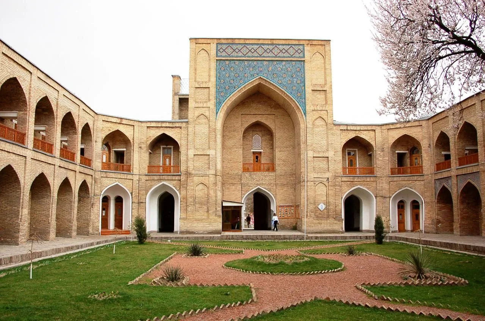

Медресе — это знание, ставшее камнем. В Абулкасыме ты прочёл один узор. Здесь ты знаешь правило — а кто знает правило, тот может починить сломанное. Один изразец в портале выбит. Верни тот, что велит симметрия.
Фасад Кукельдаша · реальная стена

— на портале выбит один изразец; восстанови его по правилу симметрии —